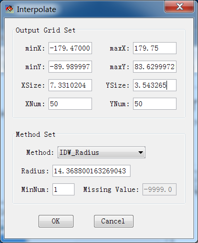
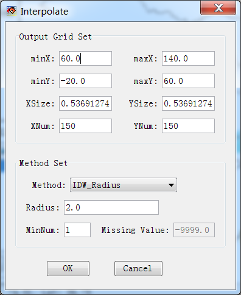
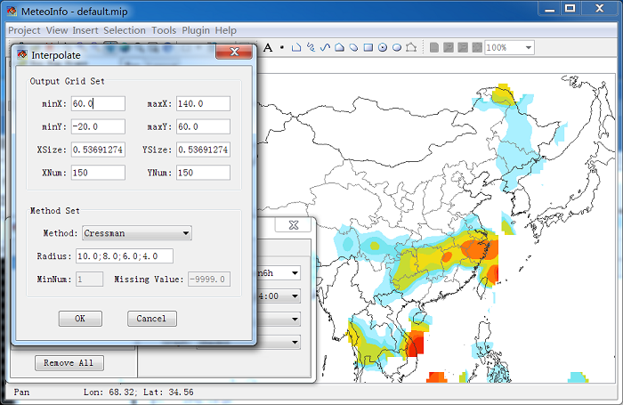

To draw the contour or shaded graphics, the station data have to be interpolated to grid data. The software will set the interpolation parameters automatically. The automatic setting is not good in this case, so we should change the setting.

After legend was reset, the graphic looks as following picture. It is much better, but maybe you still don’t like it. Then you could change the interpolation setting to see what will happen.

Click ‘Setting’ button in ‘Meteorological Data’ dialog to open ‘Interpolate’ dialog. In which output grid and interpolation method can be set. IDW (Inverse Distance Weighted) and Cressman analysis methods are applied at present. IDW includes IDW_Radius and IDW_Neighbors options. With IDW_Radius, the grid point without station point found in radius will be set as undefined (which will not be used in contour tracing process). With IDW_Neighbors option, all grid points will have values calculated from the nearest station points. The continuous distributed variables such as temperature may suite for IDW_Neighbors option. In this case, we first select interpolation method as IDW_Radius.
After you changed the setting, press ‘OK’ button to save the setting and the ‘Interpolate’ dialog will be closed also. Then press ‘Draw Data’ button in ‘Meteorological Data’ to redraw the figure with new setting. If you set ‘XSize’ and ‘YSize’ to 1, and ‘Radius’ to 2, you could get following picture. With small ‘XSize’ and ‘YSize’ means much more grid points have to be interpolated, so much more time will be cost for it.
If you just want to see the data in a certain area, such as China, you could change the output grid extent.

The Cressman objective analysis scheme (Cressman, 1959) is known as the successive correction method. It achieves its result by forcing convergence of the data to observed, interpolated values using multiple iterations. The example Cressman analysis result is plotted below.
